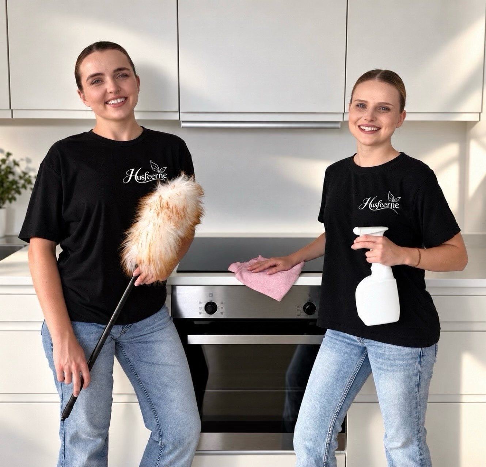
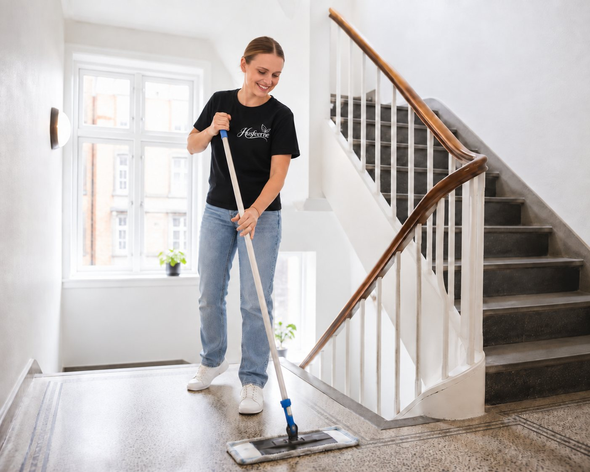
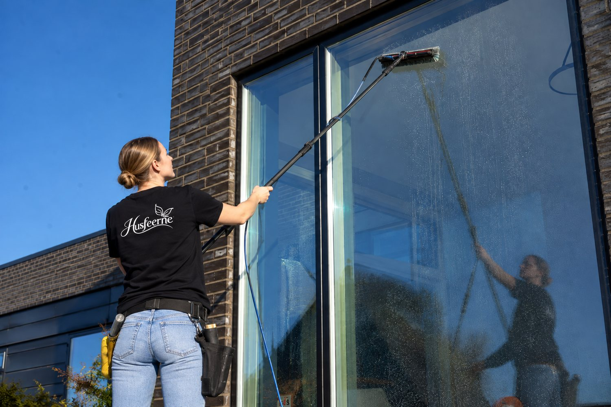
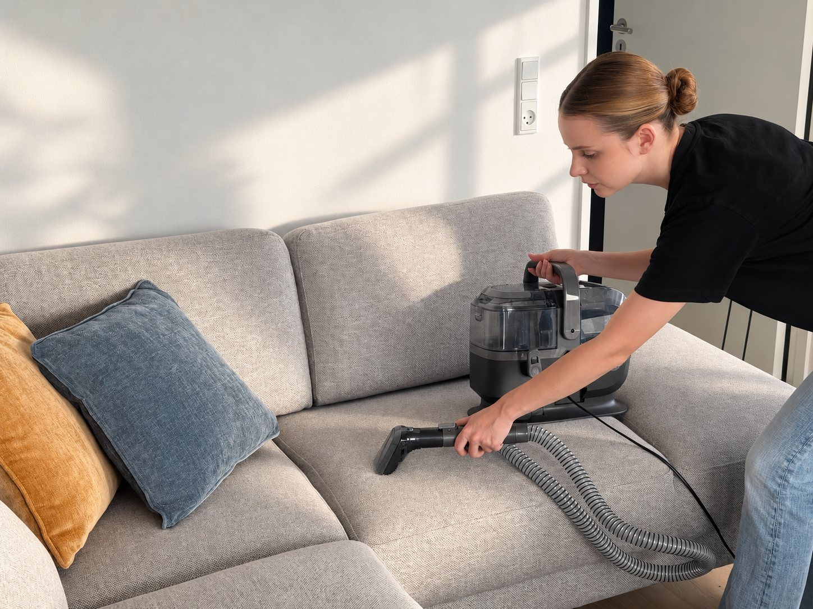
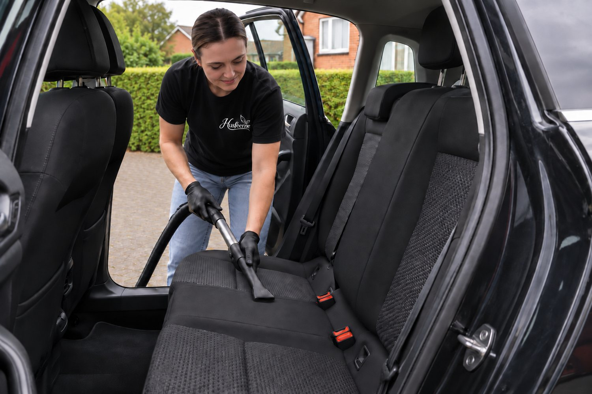
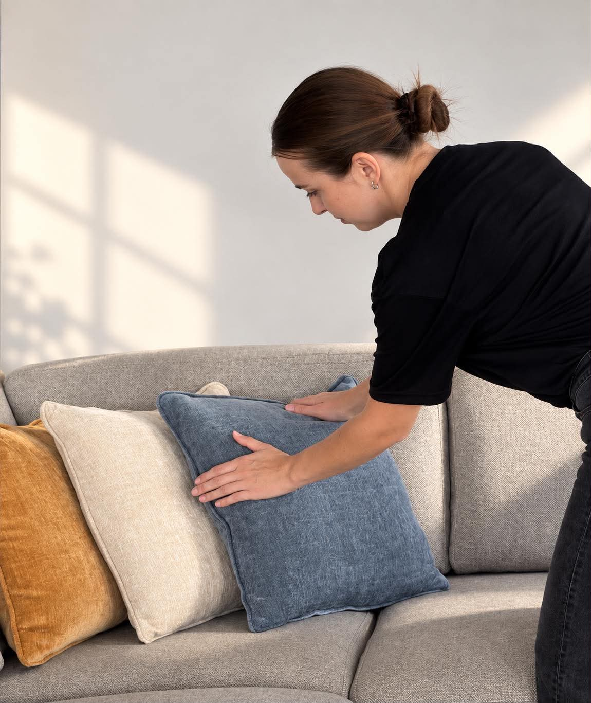

Rengøring i Aalborg – dit hjem og kontor i de bedste hænder
Husfeerne er et lille, kvindeligt rengøringsfirma med base i Aalborg. Vi gør rent i private hjem og på kontorer, og det er de samme to faste medarbejdere, der kommer hos dig hver gang – uddannede, forsikrede og diskrete. Vi behandler dit hjem og dine ting med omhu, og prisen er altid den samme: 325 kr./time inkl. moms (260 kr. ex moms for erhverv).

Rengøring i Aalborg til private og erhverv
Én fast timepris for al almindelig rengøring: 325 kr./time inkl. moms (260 kr. ex moms). Fast pris på specialopgaver – altid aftalt på forhånd. Ingen skjulte gebyrer, nogensinde.
Privat rengøring
Fast rengøringshjælp til dit hjem – ugentligt, hver 14. dag eller efter behov. Altid de samme to medarbejdere. Berettiger til servicefradrag, så din reelle pris er ca. 240 kr./time.
325 kr./time inkl. moms Privat rengøring i Aalborg – pris og omfangErhvervs- og kontorrengøring
Fast kontorrengøring i Aalborg – kontorer, butikker, klinikker, institutioner og fællesarealer. Fleksible tider – også før åbning og efter lukketid. Fast månedspris, hvis du ønsker det.
260 kr./time ex moms Erhvervs- og kontorrengøring i Aalborg – pris og omfangFlytterengøring
Grundig slutrengøring inkl. ovn, køleskab, vinduer og skabe – så depositummet kommer sikkert hjem. Fast pris, før vi går i gang.
Fra 1.995 kr. inkl. moms Flytterengøring i Aalborg – fast pris og tjeklisteHovedrengøring
Hovedrengøring fra gulv til loft: paneler, lamper, radiatorer, bag og under møbler. Vi når de steder, alle andre glemmer.
325 kr./time inkl. moms Hovedrengøring i Aalborg – det er medAirbnb & udlejning
Hurtig og pålidelig skifterengøring af sommerhuse og udlejning i hele Nordjylland – inkl. linnedskift og opfyldning, hvis du ønsker det.
325 kr./time inkl. momsByggerengøring & ejendomsservice
Rengøring efter renovering samt kældre, vaskerum, skraldeskure og fællesarealer for boligforeninger og udlejere. Faste aftaler til fast pris.
Fra 260 kr./time ex momsProfessionelt udstyr – faste priser aftalt på forhånd
Opgaver, der kræver de rigtige maskiner og den rigtige oplæring. Vi har begge dele. Du får altid en fast pris, før vi går i gang – og den holder. Alle priser inkl. moms, medmindre andet er nævnt.

Trappevask i opgange
Faste aftaler for boligforeninger og udlejere: trapper, gelændere, døre, postkasser og opgangsvinduer. Ugentligt, hver 14. dag eller månedligt – altid på den aftalte dag.
Fra 18 kr. pr. lejlighed pr. gang ex moms Trappevask i Aalborg – pris pr. lejlighed
Vinduespudsning
Stribefri vinduer ude og inde – for villaer, lejligheder og erhverv. Rentvandsanlæg til svært tilgængelige vinduer. Fast interval hver 4., 8. eller 12. uge – eller bare én gang.
Fra 129 kr. pr. gang Vinduespudsning i Aalborg – pris og interval
Sofa-, tæppe- og tekstilrens
Dybderens med professionel ekstraktionsmaskine, der sprøjter rent vand ind og suger snavs, pletter, lugt og allergener med ud igen. Sofaer, lænestole, madrasser, spisebordsstole og væg-til-væg-tæpper.
3-pers. sofa fra 649 kr.
Indvendig bilrengøring
Vi kommer til dig. Støvsugning, måtter, paneler, ruder og kopholdere – tilkøb dybderens af sæder og tekstiler med ekstraktionsmaskinen, så bilen ser ud og dufter som ny.
Fra 549 kr. · med sæderens fra 849 kr.Vi siger sjældent nej
Vi arbejder ud fra én overbevisning: Vi kan hjælpe med næsten alle rengøringsopgaver. Har vi ikke udstyret, investerer vi i det. Kræver opgaven et kursus eller en certificering, tager vi det. Sådan har vi udvidet vores ydelser – og sådan bliver vi ved.
Så beskriv din opgave, og du får en fast pris og et ærligt svar. Det værste, vi nogensinde siger, er: “Giv os en uge til at blive klar.”

Andre opgaver, vi jævnligt klarer:
Flittig. Venlig. Dygtig.
Tre ord, der styrer alt, hvad vi gør – og alle, vi ansætter.
Flittig
Vi arbejder med energi og stolthed. Hvert hjørne tæller, og vi går aldrig, før arbejdet er gjort ordentligt.
Venlig
Et smil er en del af uniformen. Vores team spreder glæde, hvor end de gør rent – for glade mennesker gør det bedste arbejde.
Dygtig
Alle medarbejdere er uddannet i teknikker, produkter og værnemidler. Vi passer godt på hinanden – og på dig.
Rengøringshjælp i Aalborg – de samme to kvinder hver gang
Husfeerne er et lille rengøringsfirma i Aalborg, og det er de samme to kvinder, der kommer hos dig hver gang. Du ved præcis, hvem der ringer på – og de ved præcis, hvordan du vil have dit hjem. Vi er uddannede, forsikrede og diskrete, og vi behandler dine ting, som var de vores egne.
Vi møder til tiden, arbejder stille og roligt, og du får altid samme kontaktperson, hvis noget skal ændres. Skal vi have en nøgle til dit hjem, aftaler vi det skriftligt – og vi låser altid efter os.
Priser på rengøring i Aalborg – privat og erhverv
Én timepris for al almindelig rengøring, faste priser på specialopgaver. Intet abonnement, ingen binding, ingen overraskelser.
- Samme timepris for alle ydelser
- Ingen binding – opsig når som helst
- Minimum 3 timer pr. besøg – så vi kan nå det hele ordentligt
- Miljørigtige, svanemærkede produkter inkluderet
- Forsikrede og uddannede medarbejdere
- Tilfredshedsgaranti – vi kommer gratis igen
- Privat rengøring giver servicefradrag – reelt ca. 240 kr./time
- Fast pris på forhånd på special- og flytteopgaver
- Betjening på dansk, engelsk, tysk og ukrainsk
| Ydelse | Pris |
|---|---|
| Privat rengøring, hovedrengøring, AirbnbTimepris, alle midler og udstyr inkluderet | 325 kr./time inkl. moms |
| Kontor-, erhvervs- og ejendomsrengøringKontor, klinik, butik – timepris eller fast månedspris | 260 kr./time ex moms |
| FlytterengøringFast pris efter kort beskrivelse af boligen | Fra 1.995 kr. |
| Trappevask i opgangeFast aftale, min. hver 4. uge | Fra 18 kr./lejlighed/gang ex moms |
| VinduespudsningLejlighed fra 129 · hus fra 149 · indvendigt som tilkøb | Fra 129 kr. pr. gang |
| Sofa- og tekstilrens (ekstraktion)2-pers. fra 549 · 3-pers. fra 649 · lænestol fra 249 · madras fra 349 | Fra 249 kr. |
| Rens af væg-til-væg-tæpperEkstraktionsrens i hjemmet eller på kontoret | Fra 39 kr./m² |
| Indvendig bilrengøringStandard fra 549 · inkl. dybderens af sæder fra 849 | Fra 549 kr. |
Rengøring i Aalborg og hele Nordjylland
I Aalborg Kommune er kørsel altid gratis – uanset om du bor i midtbyen, Vestbyen, Hasseris, Vejgaard, Gug, Kærby, Skalborg eller Aalborg Øst, eller i Nørresundby, Svenstrup, Klarup, Vodskov, Vadum eller Nibe.
Vi har base på Akvavitvej i Aalborg og kører ud i hele Nordjylland – uden for Aalborg Kommune aftaler vi blot et kørselstillæg, inden vi booker.
Spørgsmål om rengøring i Aalborg?
Hvad koster rengøring i Aalborg?
Hos Husfeerne koster almindelig rengøring altid 325 kr./time inkl. moms (260 kr. ex moms) – uanset om det er privat rengøring, hovedrengøring eller erhvervsrengøring. Specialopgaver som trappevask, vinduespudsning, sofarens og indvendig bilrengøring får du til en fast pris på forhånd. Ingen gebyrer, ingen overraskelser.
Hvem kommer ud og gør rent?
Husfeerne er et lille kvindeligt team, og det er de samme to medarbejdere, der kommer hos dig hver gang. De er uddannede i teknikker, produkter og værnemidler, de er forsikrede, og du har direkte kontakt til dem, hvis noget skal ændres. Kommer der undtagelsesvis en anden, får du besked i god tid.
Er Husfeerne et rengøringsfirma eller en platform?
Husfeerne er et lille rengøringsfirma i Aalborg med egne, uddannede medarbejdere – ikke en platform, der formidler private hjælpere. Medarbejderne er dækket af vores erhvervs- og ansvarsforsikring, og det er de samme to, der kommer hver gang.
Taler I andre sprog end dansk?
Ja. Husfeerne betjener dig på dansk, engelsk, tysk og ukrainsk – både på telefonen, i mails og her på hjemmesiden, hvor du kan skifte sprog i menuen øverst. Skriv gerne til os på det sprog, du er mest tryg ved.
Kan jeg få servicefradrag?
Ja. Rengøring i dit eget hjem giver ret til servicefradrag – i 2026 op til 18.300 kr. pr. voksen i husstanden med en skatteværdi på ca. 26 %. Det bringer din reelle pris ned på ca. 240 kr./time. Du betaler blot elektronisk og indberetter beløbet til Skat – vi sender en faktura med alt, du skal bruge.
Tager I opgaver, der ikke står på jeres liste?
Næsten altid. Vi tror på, at vi kan hjælpe med stort set alle rengøringsopgaver. Mangler vi udstyret, køber vi det – kræver opgaven et kursus eller en certificering, tager vi det. Beskriv din opgave, og du får et ærligt svar og en fast pris.
Hvordan foregår sofa- og tekstilrens?
Vi bruger en professionel ekstraktionsmaskine: den sprøjter rent vand og et mildt, miljørigtigt rensemiddel dybt ned i stoffet og suger det straks op igen sammen med snavs, pletter, lugt og allergener. De fleste sofaer er tørre igen inden for 4–8 timer. Vi renser hjemme hos dig – du skal ikke flytte noget.
Hvilke områder dækker I?
Vi har base i Aalborg, og i hele Aalborg Kommune er kørsel gratis – fx Hasseris, Vejgaard, Gug, Skalborg, Aalborg Øst, Nørresundby og Svenstrup. Vi dækker desuden hele Nordjylland, bl.a. Hjørring, Frederikshavn, Thisted, Brønderslev og Hobro; uden for kommunen aftaler vi et tillæg på forhånd.
Skal jeg selv have rengøringsmidler?
Nej – vi medbringer alt, inklusiv miljøvenlige, svanemærkede produkter og professionelt udstyr. Det hele er inkluderet i prisen.
Er der binding eller abonnement?
Nej. Du kan opsige eller sætte din rengøring på pause når som helst – helt uden binding.
Hvor hurtigt kan I komme i gang?
Som regel inden for 2–5 hverdage efter dit opkald. Flytterengøring kan ofte klares hurtigere – spørg os endelig.
Hvad er inkluderet i en fast rengøring?
Køkken, bad, støvsugning og gulvvask, afstøvning af møbler, paneler og lister, spejle og glasflader samt tømning af affald. Sengetøj og håndklæder skifter vi efter aftale. Alle midler og alt udstyr er med i prisen.
Se hele tjeklisten for privat rengøringKan jeg aflyse eller flytte en rengøring?
Ja. Du kan flytte eller aflyse en aftalt rengøring gebyrfrit indtil 24 timer før det aftalte tidspunkt. Aflyser du senere, kan vi fakturere op til 50 % af den aftalte tid. Faste aftaler kan altid opsiges uden varsel.
Er I forsikrede?
Ja, vi har fuld erhvervs- og ansvarsforsikring, og alle medarbejdere er uddannet i teknikker, produkter og værnemidler.
Vi ringer dig op – gratis og uforpligtende
Skriv dit telefonnummer eller din email, så kontakter vi dig inden for 24 timer på hverdage.